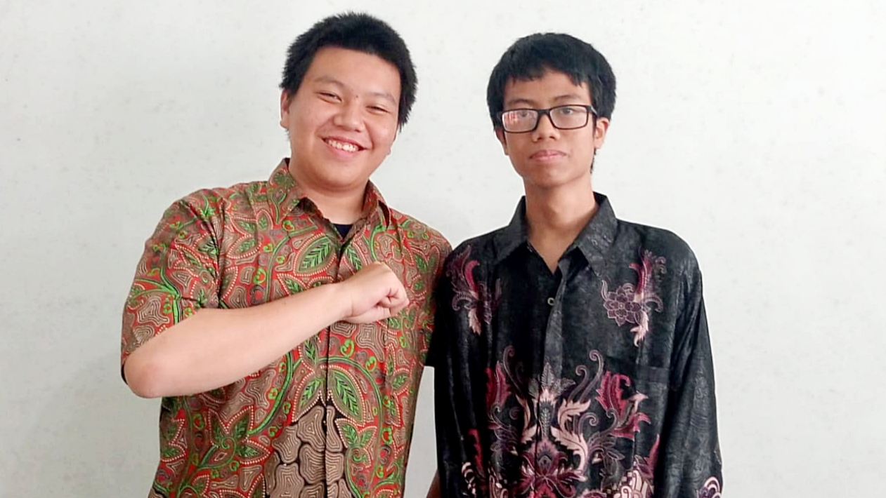

Rasa persatuan dan kesatuan sangat penting di Indonesia. Dengan mewujudkan rasa persatuan dan kesatuan, Indonesia dapat berdiri kokoh hingga saat ini. Pada masa Pilpres atau Pemilihan Umum Presiden Indonesia 2024, setiap warga negara Indonesia yang berhak dapat memilih Paslon atau Pasangan Calon pilihannya.
Situs web ini dibuat bertujuan untuk mengampanyekan pentingnya persatuan dan kesatuan di Indonesia setelah Pilpres 2024 serta menguji tingkat rasa persatuan dan persatuan warga negara Indonesia.
Persatuan dan kesatuan sangatlah penting karena negara kita yang terdiri dari beragam suku, ras, dan agama tentu memiliki perbedaan dalam segi budaya, adat, dan kepercayaan.
Read MoreGaruda Pancasila merupakan lambang negara Indonesia yang dirancang setelah Perang Kemerdekaan Indonesia 1945–1949 yang disusul oleh pengakuan kedaulatan Indonesia oleh Belanda melalui Konferensi Meja Bundar pada tahun 1949.
Read MoreJames Evanda (Kiri) & Farras Zaky (Kanan)
